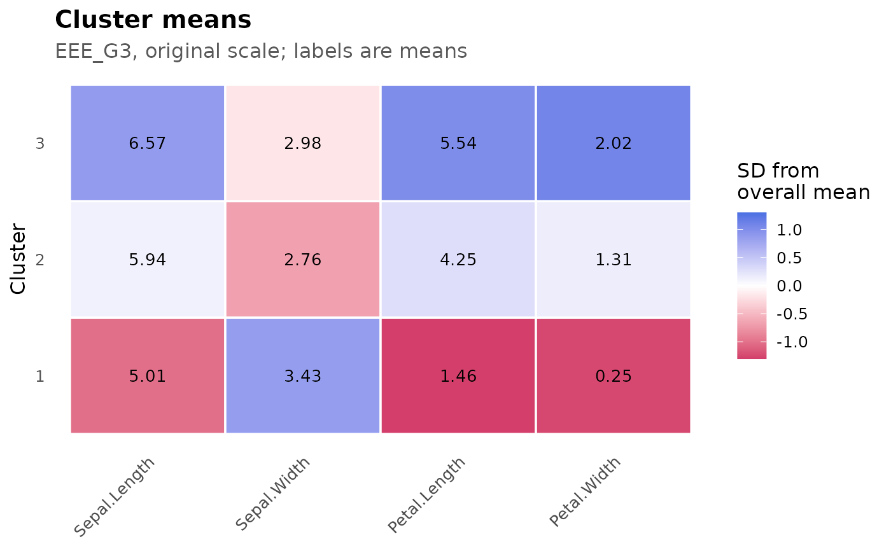
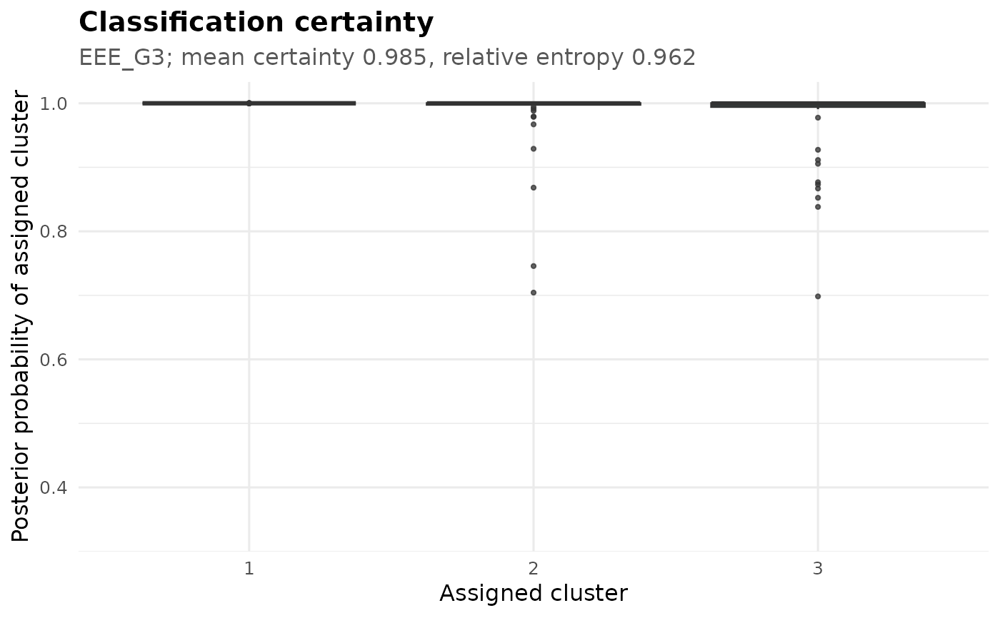
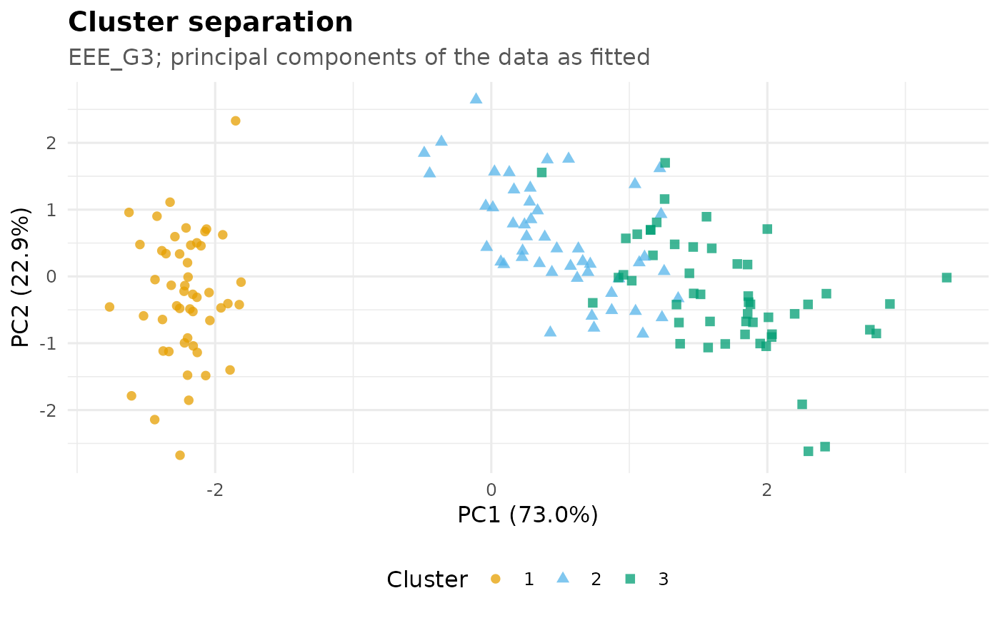
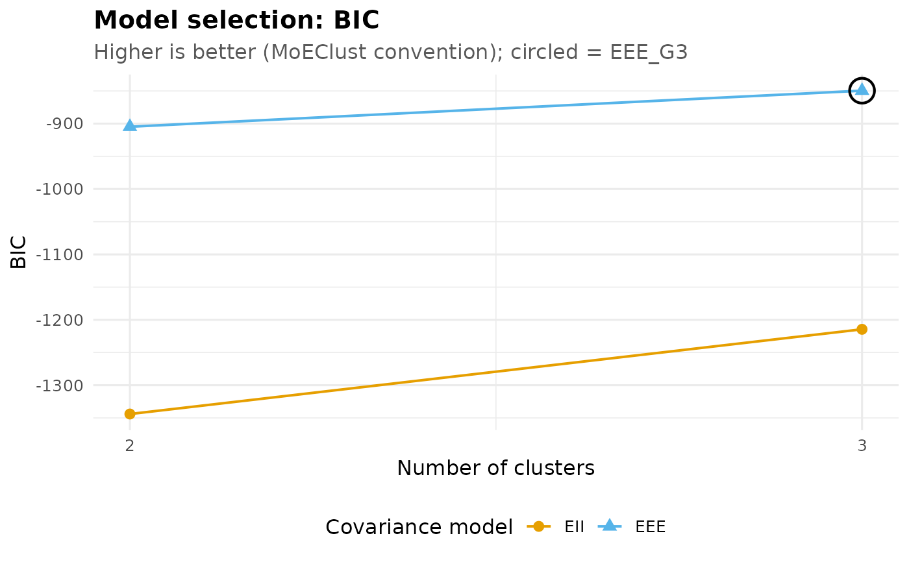
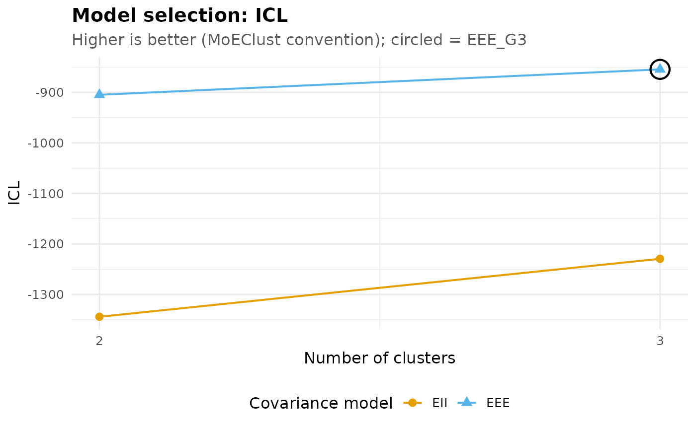
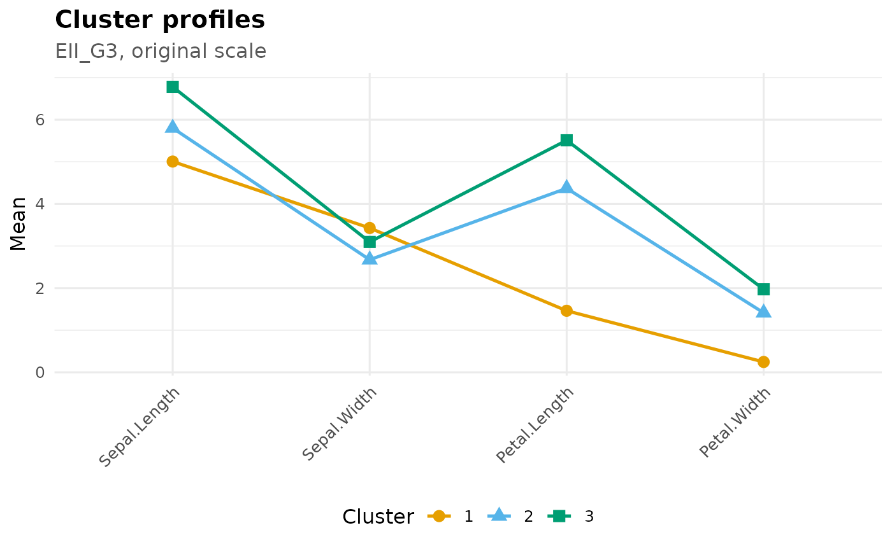
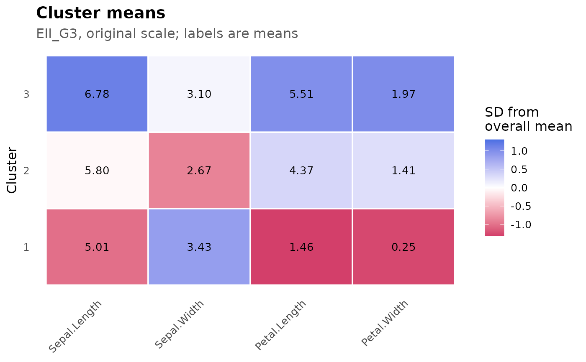

One verb for every figure of a clustering() result. Plots are organised
into three groups, and type accepts any mix of single plot names, group
names, or "all":
"clusters"— what the clusters look like:"profile","heatmap","distribution","sizes"."diagnostics"— how cleanly the model separates them:"certainty","avepp","projection"."selection"— which model fits best:"bic","aic","icl"."all"— every plot above, for every fitted model.
Cluster and diagnostic plots describe one fitted model at a time, so they
are drawn once per model in model. Selection plots compare all fitted
models and are drawn once.
Use clustering_plot_types() for the full catalogue with descriptions.
All plots use the Okabe-Ito palette, and clusters are distinguished by
shape or axis position as well as colour.
Usage
plot_clustering(
results,
type = "clusters",
model = NULL,
scale = c("original", "scaled")
)Arguments
- results
An moe_analysis object returned by
clustering().- type
Character vector of plot types and/or groups; see Description. Defaults to
"clusters".- model
Which fitted model(s) to describe:
NULL(default), one or more model names, or"all"for every fitted model.NULLmeans the best model by BIC, except withtype = "all", where it means every model. Selection plots ignoremodel.- scale
Data scale for
"profile","heatmap", and"distribution":"original"(default) or"scaled". Diagnostics always use the data as fitted.
Value
A single ggplot when the request resolves to one plot. Otherwise an
object of class clustering_plots: a named list of ggplots, ordered by
model and then by catalogue. Elements are named by plot type when one
model is drawn, and "<model>/<type>" when several are; selection plots
are always named by type. Printing it draws every plot;
as.data.frame() lists its contents with one row per plot.
Raises saqrmisc_bad_input when results is not an moe_analysis object
or has no fitted models, saqrmisc_bad_type for an unknown type, and
saqrmisc_model_not_found for an unknown model.
References
Murphy, K., & Murphy, T. B. (2020). Gaussian parsimonious clustering models with covariates and a noise component. Advances in Data Analysis and Classification, 14, 293-325.
Nagin, D. S. (2005). Group-Based Modeling of Development. Harvard University Press. (Average posterior probability diagnostic.)
Examples
clustering_plot_types()
#> type group
#> 1 profile clusters
#> 2 heatmap clusters
#> 3 distribution clusters
#> 4 sizes clusters
#> 5 certainty diagnostics
#> 6 avepp diagnostics
#> 7 projection diagnostics
#> 8 bic selection
#> 9 aic selection
#> 10 icl selection
#> description
#> 1 Mean of each variable per cluster, one line per cluster
#> 2 Cluster means, coloured by standardised distance from the overall mean
#> 3 Within-cluster spread of each variable (boxplots)
#> 4 Number and percentage of observations per cluster
#> 5 Posterior probability of the assigned cluster, with relative entropy
#> 6 Average posterior probability: assigned cluster by posterior cluster
#> 7 Observations on the first two principal components, by cluster
#> 8 BIC across models and numbers of clusters (higher is better)
#> 9 AIC across models and numbers of clusters (higher is better)
#> 10 ICL across models and numbers of clusters (higher is better)
# \donttest{
fit <- clustering(
iris,
vars = c("Sepal.Length", "Sepal.Width", "Petal.Length", "Petal.Width"),
n_clusters = 2:3,
models = c("EII", "EEE"),
verbose = FALSE
)
plot_clustering(fit) # cluster plots, best model



 plot_clustering(fit, type = "diagnostics")
plot_clustering(fit, type = "diagnostics")



plot_clustering(fit, type = "selection")



plot_clustering(fit, type = "profile", model = "all")



 plot_clustering(fit, type = c("heatmap", "certainty"), model = "EII_G3")
plot_clustering(fit, type = c("heatmap", "certainty"), model = "EII_G3")

 everything <- plot_clustering(fit, type = "all") # every plot, every model
as.data.frame(everything)
#> name plot group model
#> 1 EII_G2/profile profile clusters EII_G2
#> 2 EII_G2/heatmap heatmap clusters EII_G2
#> 3 EII_G2/distribution distribution clusters EII_G2
#> 4 EII_G2/sizes sizes clusters EII_G2
#> 5 EII_G2/certainty certainty diagnostics EII_G2
#> 6 EII_G2/avepp avepp diagnostics EII_G2
#> 7 EII_G2/projection projection diagnostics EII_G2
#> 8 EEE_G2/profile profile clusters EEE_G2
#> 9 EEE_G2/heatmap heatmap clusters EEE_G2
#> 10 EEE_G2/distribution distribution clusters EEE_G2
#> 11 EEE_G2/sizes sizes clusters EEE_G2
#> 12 EEE_G2/certainty certainty diagnostics EEE_G2
#> 13 EEE_G2/avepp avepp diagnostics EEE_G2
#> 14 EEE_G2/projection projection diagnostics EEE_G2
#> 15 EII_G3/profile profile clusters EII_G3
#> 16 EII_G3/heatmap heatmap clusters EII_G3
#> 17 EII_G3/distribution distribution clusters EII_G3
#> 18 EII_G3/sizes sizes clusters EII_G3
#> 19 EII_G3/certainty certainty diagnostics EII_G3
#> 20 EII_G3/avepp avepp diagnostics EII_G3
#> 21 EII_G3/projection projection diagnostics EII_G3
#> 22 EEE_G3/profile profile clusters EEE_G3
#> 23 EEE_G3/heatmap heatmap clusters EEE_G3
#> 24 EEE_G3/distribution distribution clusters EEE_G3
#> 25 EEE_G3/sizes sizes clusters EEE_G3
#> 26 EEE_G3/certainty certainty diagnostics EEE_G3
#> 27 EEE_G3/avepp avepp diagnostics EEE_G3
#> 28 EEE_G3/projection projection diagnostics EEE_G3
#> 29 bic bic selection all fitted models
#> 30 aic aic selection all fitted models
#> 31 icl icl selection all fitted models
#> description
#> 1 Mean of each variable per cluster, one line per cluster
#> 2 Cluster means, coloured by standardised distance from the overall mean
#> 3 Within-cluster spread of each variable (boxplots)
#> 4 Number and percentage of observations per cluster
#> 5 Posterior probability of the assigned cluster, with relative entropy
#> 6 Average posterior probability: assigned cluster by posterior cluster
#> 7 Observations on the first two principal components, by cluster
#> 8 Mean of each variable per cluster, one line per cluster
#> 9 Cluster means, coloured by standardised distance from the overall mean
#> 10 Within-cluster spread of each variable (boxplots)
#> 11 Number and percentage of observations per cluster
#> 12 Posterior probability of the assigned cluster, with relative entropy
#> 13 Average posterior probability: assigned cluster by posterior cluster
#> 14 Observations on the first two principal components, by cluster
#> 15 Mean of each variable per cluster, one line per cluster
#> 16 Cluster means, coloured by standardised distance from the overall mean
#> 17 Within-cluster spread of each variable (boxplots)
#> 18 Number and percentage of observations per cluster
#> 19 Posterior probability of the assigned cluster, with relative entropy
#> 20 Average posterior probability: assigned cluster by posterior cluster
#> 21 Observations on the first two principal components, by cluster
#> 22 Mean of each variable per cluster, one line per cluster
#> 23 Cluster means, coloured by standardised distance from the overall mean
#> 24 Within-cluster spread of each variable (boxplots)
#> 25 Number and percentage of observations per cluster
#> 26 Posterior probability of the assigned cluster, with relative entropy
#> 27 Average posterior probability: assigned cluster by posterior cluster
#> 28 Observations on the first two principal components, by cluster
#> 29 BIC across models and numbers of clusters (higher is better)
#> 30 AIC across models and numbers of clusters (higher is better)
#> 31 ICL across models and numbers of clusters (higher is better)
# }
everything <- plot_clustering(fit, type = "all") # every plot, every model
as.data.frame(everything)
#> name plot group model
#> 1 EII_G2/profile profile clusters EII_G2
#> 2 EII_G2/heatmap heatmap clusters EII_G2
#> 3 EII_G2/distribution distribution clusters EII_G2
#> 4 EII_G2/sizes sizes clusters EII_G2
#> 5 EII_G2/certainty certainty diagnostics EII_G2
#> 6 EII_G2/avepp avepp diagnostics EII_G2
#> 7 EII_G2/projection projection diagnostics EII_G2
#> 8 EEE_G2/profile profile clusters EEE_G2
#> 9 EEE_G2/heatmap heatmap clusters EEE_G2
#> 10 EEE_G2/distribution distribution clusters EEE_G2
#> 11 EEE_G2/sizes sizes clusters EEE_G2
#> 12 EEE_G2/certainty certainty diagnostics EEE_G2
#> 13 EEE_G2/avepp avepp diagnostics EEE_G2
#> 14 EEE_G2/projection projection diagnostics EEE_G2
#> 15 EII_G3/profile profile clusters EII_G3
#> 16 EII_G3/heatmap heatmap clusters EII_G3
#> 17 EII_G3/distribution distribution clusters EII_G3
#> 18 EII_G3/sizes sizes clusters EII_G3
#> 19 EII_G3/certainty certainty diagnostics EII_G3
#> 20 EII_G3/avepp avepp diagnostics EII_G3
#> 21 EII_G3/projection projection diagnostics EII_G3
#> 22 EEE_G3/profile profile clusters EEE_G3
#> 23 EEE_G3/heatmap heatmap clusters EEE_G3
#> 24 EEE_G3/distribution distribution clusters EEE_G3
#> 25 EEE_G3/sizes sizes clusters EEE_G3
#> 26 EEE_G3/certainty certainty diagnostics EEE_G3
#> 27 EEE_G3/avepp avepp diagnostics EEE_G3
#> 28 EEE_G3/projection projection diagnostics EEE_G3
#> 29 bic bic selection all fitted models
#> 30 aic aic selection all fitted models
#> 31 icl icl selection all fitted models
#> description
#> 1 Mean of each variable per cluster, one line per cluster
#> 2 Cluster means, coloured by standardised distance from the overall mean
#> 3 Within-cluster spread of each variable (boxplots)
#> 4 Number and percentage of observations per cluster
#> 5 Posterior probability of the assigned cluster, with relative entropy
#> 6 Average posterior probability: assigned cluster by posterior cluster
#> 7 Observations on the first two principal components, by cluster
#> 8 Mean of each variable per cluster, one line per cluster
#> 9 Cluster means, coloured by standardised distance from the overall mean
#> 10 Within-cluster spread of each variable (boxplots)
#> 11 Number and percentage of observations per cluster
#> 12 Posterior probability of the assigned cluster, with relative entropy
#> 13 Average posterior probability: assigned cluster by posterior cluster
#> 14 Observations on the first two principal components, by cluster
#> 15 Mean of each variable per cluster, one line per cluster
#> 16 Cluster means, coloured by standardised distance from the overall mean
#> 17 Within-cluster spread of each variable (boxplots)
#> 18 Number and percentage of observations per cluster
#> 19 Posterior probability of the assigned cluster, with relative entropy
#> 20 Average posterior probability: assigned cluster by posterior cluster
#> 21 Observations on the first two principal components, by cluster
#> 22 Mean of each variable per cluster, one line per cluster
#> 23 Cluster means, coloured by standardised distance from the overall mean
#> 24 Within-cluster spread of each variable (boxplots)
#> 25 Number and percentage of observations per cluster
#> 26 Posterior probability of the assigned cluster, with relative entropy
#> 27 Average posterior probability: assigned cluster by posterior cluster
#> 28 Observations on the first two principal components, by cluster
#> 29 BIC across models and numbers of clusters (higher is better)
#> 30 AIC across models and numbers of clusters (higher is better)
#> 31 ICL across models and numbers of clusters (higher is better)
# }